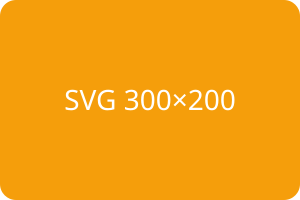

Right-click each SVG: with site access, "Copy Image + Collect" appears only over SVGs. Paste into a text editor to see the markup.
Plain inline SVG with width/height and fill attributesNo width/height attributes, sized by CSS only: capture gets 96 × 48 baked inStyled by page CSS classes (purple square, teal stroke, orange circle): the capture must keep the colorscurrentColor icon in a red-tinted container: capture stays red
References elsewhere in the page
Sprite icon via <use href="#spr-star">: the symbol must travel into the captureGradient defined in another SVG: the gradient must travel into the capture
Link and large
SVG wrapped in a link (logo case): without site access the item needs page context, so this one needs site access1200-element SVG: style inlining is skipped, capture still works
object / embed
<object> SVG document (same-origin): captured as the original file URLCross-origin <object> (127.0.0.1): without site access expect the fetch to fail and the permission hint
Control

Plain <img> SVG: only ONE "Copy Image + Collect" item may appear (the image one)